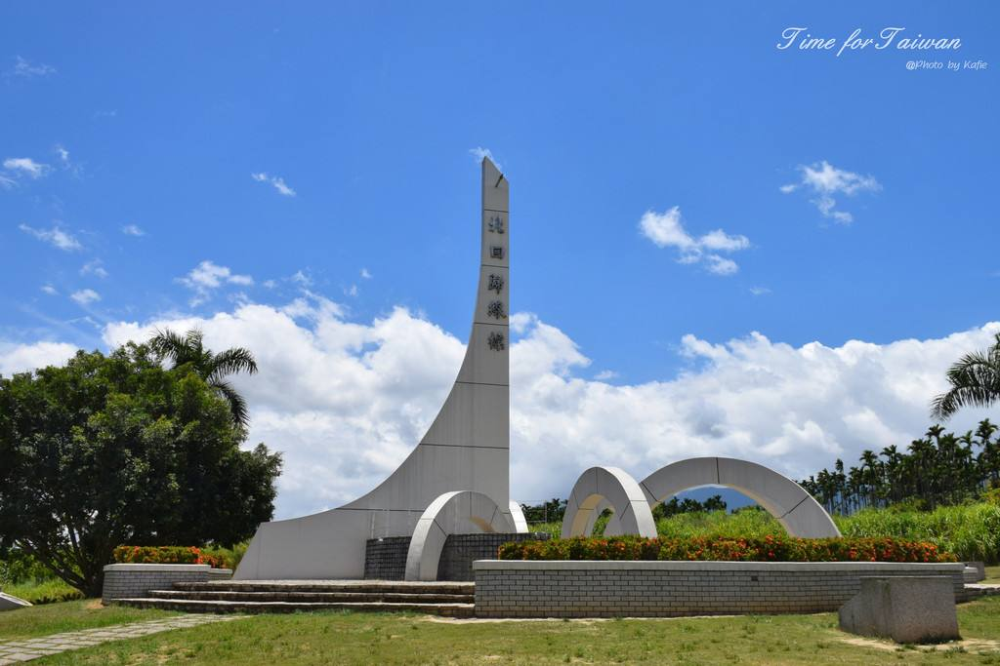

北回归线标志公园简介
www.luotuotravel.com 骆驼旅游网
门票：
欣欣成人门票价：8元起（省2元）；
特惠政策：
A.免费政策：1.2米以下儿童【含1.2米】免票，60以上老年人、军人、记者、残疾人士凭有效证件均免票；
B.优惠政策：学生凭有效证件可购买半价票（5元/人，自行购买）（上述优惠政策，需到景区自行购买）。
开放时间：
7:30-16:30（换票时间）
交通概况：
8路公交直达（北回归线公园---西山风景区）。

北回归线标志公园简介：
位于桂平城区东郊8公里的石咀镇小汶村南梧二级公路旁。北回归线标志的东西方向嵌有宽5厘米 ，长20多米的北回归线标志指示线，也是热带与温带的分界线，站在这里，可以一只脚踩在热 带上，另一只脚踩在温带上；站在标志正中的桂平点上发音，声音特别洪亮，好似使用麦克风一 样，在该处相距32米的南北两地说悄悄话，竟似通电话般清晰，这是全球9个北回归线标志中唯一有 强回音的标志塔。